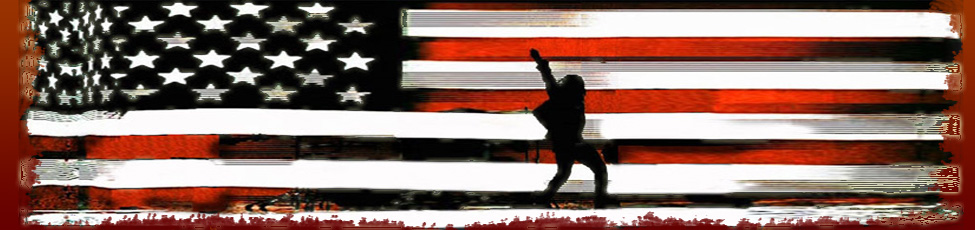

bakiwop in '08 - because there's no election in '09
bakiwop: walking for president because running is too much damned work.
Vote often! Vote bakiwop!

❄
Give me money!
When faced with impossible odds, generations of Americans have responded with a simple creed that sums up the spirit of a people:
Get more money.
People need flat scree TVs. People need cars. People need iPods.
I need money.
Running a campaign is not cheap and in order to make change in Washington I need your change now – whatever you can scrounge up. Go ahead, take a minute to check in the cushions in your sofa, I’ll wait.
Find anything? Good.
Men - check your wallet. Remember that twenty you stashed in the hidden pocket to be used in an emergency? Well what the heck can you buy with twenty bucks these days, so go ahead, send that on in as well.
Women and cross-dressing men – check your purses. I know some of you have really big purses and you’ve been wanting to clean them out and organize them for a while now, so why don’t you take a moment and do so. Go ahead, I’ll wait again. Find any change? Good. Send it on in.
Now how about those bank accounts. You know that extra money you’ve been setting aside for the vacation? Well with all the deadlines at work and the kids in school you don’t have time to take that vacation, so go ahead and send me your vacation money.
And don’t forget your 401(k)s your 403(b)s and your other retirement funds. You are saving for your future – which is good – but exactly what kind of future are you saving for? With the wrong person in office you won’t have any kind of a future at all. In order to secure your future today send me your bucks for a better tomorrow.
Change requires change and your change is better than my change so to see the change you want send me your change now.
I am proud and honored to stand with you as we push forward to bring about the reforms that are so desperately needed for our nation's future. To help ensure I have the resources I need, make your contribution today.
- Vote often, vote bakiwop!
❄
Waste your precious time and energy on my campaign so I don't have to! Volunteer today!
The most important thing you can do to make me President of the United States is to give me money, but if you are too cheap or poor to give me money then volunteering some time and talent would be okay.
I guess.
Seriously though, I’m not particularly happy about it. I mean, can’t you give even a buck or two? Really? You’ll go thousands in debt to get that flat screen TV but you can’t even throw some change my way to make me leader of the free world? It’s not like I’m asking for thousands of dollars here – the fact that you are even on this page instead of the give me money page means you’re a cheapskate – but, come on, something? Anything?
I know, how about you skip that half-caf, low-fat mocha latte for one day to give me money.
No?
Fine. Look, if you want to “help” or “volunteer” then so be it, I can’t stop you, but how about calling up some friends and seeing if they have some money to give me. That way you can feel good about yourself for trying to get me elected and I can get my hands on some money to run this campaign, okay?
Some other ideas for volunteering include:
❄
Change.
You’ll hear many politicians talk about change and how the change they want is better than the change their opponents want even though change is what the last person to get into office was talking about to get elected and we all know how that change turned out.
So I want you to take a deep look into your own heart and see what kind of change you expect from a leader. I want you to make sure that you want change, and once changed, the change is the kind of change you want because once a change is made changing back to the previous change is difficult at best and impossible at worst.
So I guess what you have to ask yourself is if change is really what you want or do you want a change in the change being called for from my opponents. Because their change is all about change but it is the type of change we’ve had in Washington for decades and that kind of change simply isn’t changing the face of politics enough.
So we all agree we want change but my change is the kind of change we need because my change has changed from my opponents' (and the previous administrations’) change and will change things not just because it is change or because of change for the sake of change but rather because of the true change we need – the change of the status quo and other appropriate Latin terms.
Since my change changes the change being called for from my opponents and previous administrations I can assure you that the change will change the change that is being changed from all the people trying to change.
Believe in change because with belief in change there can be belief and change which will bring about change which will cause belief which facilitates change. Believe! Change!
- Vote often, vote bakiwop!
❄
Welcome to the new, official headquarters of bakiwop's 2008 presidential campaign. There is now a weblog and much more to coerce you into voting for me come November.
If you all work very hard and give me lots of money, together we can make me the President of the United States while you have to keep your lousy, non-president job.
- Vote often, vote bakiwop.
❄
Hillary - Obama Race Heats Up — Guy Stabs his Brother-in-law.
The race between Hillary Clinton and Barack Obama for the Democratic nomination continues to heat up -- but in one Montgomery County, Pa. household, the debate turned violent.
Prosecutors say that two brothers-in-law tried to settle the presidential race on the kitchen floor of a Collegeville, Pa. home.
Jose Ortiz, 28 (right), is now behind bars on felony assault charges after prosecutors say he stabbed Sean Shurelds inside a home in the 100 block of Honeylocust Court.
I promise that if you vote for me you will never have to stab a family member. Ever.
Unless, of course, you really want to.
- Vote often, vote bakiwop.
❄
Clinton suggests she'll stay in race after Tuesday.
Democratic Sen. Hillary Rodham Clinton suggested Monday she'll press on with the campaign after Tuesday's crucial primaries, arguing that momentum is on her side despite 11 straight losses to rival Sen. Barack Obama.
I solemnly promise that, as your future president, if I ever meet Hillary Clinton I will explain the actual meaning of the phrase "momentum on my side".
- Vote often, vote bakiwop.
❄
Candidates State Candidates Cannot Win Election.
Though the campaign later argued that he hadn't said it, Sen. Hillary Rodham Clinton's chief campaign strategist [Mark Penn] told reporters this morning that Sen. Barack Obama "can't win the general election."
Clinton believes Obama and McCain cannot win the general election. Obama believes McCain and Clinton cannot win the general election. McCain believes Obama and Clinton cannot win the general election. And no one believes Ron Paul or Ralph Nader can win the general election.
They are all, of course, correct; ergo I am the only candidate who can win the election. Ipso facto, you must vote for me.
- Vote often, vote bakiwop
❄
From the mailbag:
I would like to give you money in the form of a payment for a campaign t shirt/bumper sticker. Especially your "walking for president" slogan. Do you have any such thing set up? - Jill D.
Jill,
I, unfortunately, have no such thing set up. As you may have gathered from my "walking for president because running is too much damned work" campaign slogan I am a lazy sod and creating items in exchange for campaign contributions seems far too much like work.
There is little concern over all this, however, as presidential campaign donations for items (such as t-shirts, bumper stickers, or plates at a campaign dinner) normally run in the tens of thousands of dollars. Now, if you are from another country, say England, that would amount - after the exchange rate - to about 2.50 British Pounds Sterling. However, I find most Americans unwilling to spend that much money on a bumper sticker or t-shirt.
Even if I were to offer these items for campaign contributions I fear that, after I was elected, I would have to hunt down each and every campaign contributor as they would possess nearly priceless campaign collectibles which could be used to fund terrorist activities.
Unfortunately, after hunting you down and throwing you into a federal penitentiary you would probably not be able to vote for me again as many states have laws against felons voting in elections. Throwing all my campaign contributors into jail would also have the effect of lessening my chances of raising money for my reelection campaign in 2012 and that is a risk I am simply not willing to take.
I do appreciate your interest and hope you manage, somehow, to give me gobs of money at some point in the future.
The future leader of the free world,
bakiwop
- Vote often, vote bakiwop
❄
Clinton and Obama Compare Themselves to Rocky.
Barack Obama says he’s the rightful heir to any Rocky movie references, telling the audience at a state AFL-CIO convention on Wednesday that Hillary Clinton’s claim to be the scrappy underdog is inaccurate in Pennsylvania.
Being the only Italian running in this race I think we can all safely assume that I'm the Rocky of this presidential election and the definite underdog in Philadelphia (and the rest of Pennsylvania (and the rest of America)) as no one there knows I am running.
Being the unpopular underdog is just another example of the blatant lies that candidates are willing to tell you in order to get elected President of the United States of America. Whereas they have to lie to try and get your sympathy and your vote you can rest assured that I am, in this matter and always, only telling the truth.
I would never lie to you, dear Voter.
- Vote often, vote bakiwop
❄
Obama Says Anyone’s Better than Bush.
A clear endorsement for my Presidency from Barack Obama.
- Vote often, vote bakiwop
❄
Clinton joins McCain in hitting Obama on gas tax.
Hillary Clinton criticized Barack Obama yesterday for opposing the concept of suspending the gas tax during the peak summer driving months, a plan both she and Republican John McCain have endorsed.
"My opponent, Senator Obama, opposes giving consumers a break," Clinton said, campaigning in North Carolina. "I understand the American people need some relief."
Hillary went on, "Not a lot of relief, mind you, but some relief for sure. Maybe a bit more than a skosh of relief but not nearly so much as a dollop - more of a tad than a smidgen. Perhaps even an iota or a modicum or a whit but definitely not a pinch or a smattering."
Obama responded by asking both Hillary and McCain to please stop hitting him. The meanies.
- Vote often, vote bakiwop
❄
The relationship between Barack Obama and the white working class is beginning to resemble that between Ahab and the white whale. In state after state (Ohio, Pennsylvania and now Indiana), Obama sets out to reel in his working-class quarry, and, in state after state, it eludes him. As Obama is still the likely nominee, many Democrats fear that come November, working-class whites will pull Obama and their party down to defeat.
Might I suggest, Senator Obama, that little would grab the attention of the American People like a harpoon to the leg.
- Vote often, vote bakiwop
❄
Clinton, Obama Stress Democratic Party Unity
"Both Senator Obama and I have made it very clear that we will have a unified Democratic Party going into the fall elections," said Hillary Clinton. "I have said that I would work my heart out for him [if Obama is the nominee]. He has said he would do the same for me [if I am the nominee]."
"I want a Democrat to win in November," said Barack Obama. "So even if Senator Clinton were the nominee instead of me, I would still be campaigning for Democrats."
Senator Clinton continued, "First things first, though - Primaries to the death!"
Senator Obama, "No. To the pain."
Clinton, "I don't think I'm quite familiar with that phrase."
Obama, "I'll explain and I'll use small words so that you'll be sure to understand, you warthog faced buffoon."
Clinton. "That may be the first time in my life a man besides my husband has dared insult me."
Obama, "It won't be the last. To the pain means the first thing you will lose will be your feet below the ankles. Then your hands at the wrists. Next your nose."
Clinton, "And then my tongue I suppose, I beat you too quickly in Pennsylvania. A mistake I don't mean to duplicate in Indiana."
Obama, "I wasn't finished. The next thing you will lose will be your left eye followed by your right."
Clinton, "And then my ears, I understand. Let's get on with it."
Obama, "Wrong! Your ears you keep and I'll tell you why. So that every shriek of every child at seeing your hideousness will be yours to cherish. Every babe that weeps at your approach, every woman who cries out, 'Dear God! What is that thing,' will echo in your perfect ears. That is what to the pain means. It means I leave you in anguish, wallowing in freakish misery in the Senate forever."
Clinton, "I think your bluffing."
Obama, "It's possible, Pig, I might be bluffing. It's conceivable, you miserable, vomitous mass, that I only lost in Pennsylvania because I lacked the votes. But, then again... perhaps I have the votes after all."
Obama, "Drop... Your... Candidacy."
- Vote often, vote bakiwop
❄
McCain gives money back to PAC.
PAC treasurer Steve Voeller said the excess in-kind contributions were an oversight and notified the McCain campaign, which said it wrote a $1,896.52 check to reimburse the committee for the excess contribution.
I promise that if you give me money I will not - no matter how immoral, illegal or unpopular - return a dime of it. To anybody. Ever. That's how dedicated I am to getting and keeping your money. That's how dedicated I am to being your President.
- Vote often, vote bakiwop
caveat lector